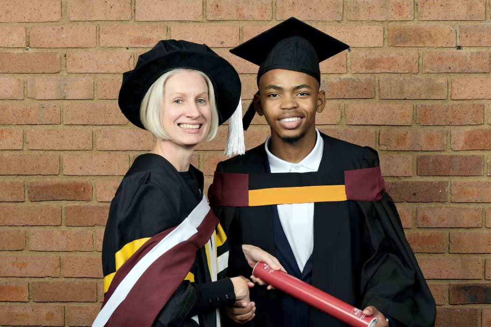
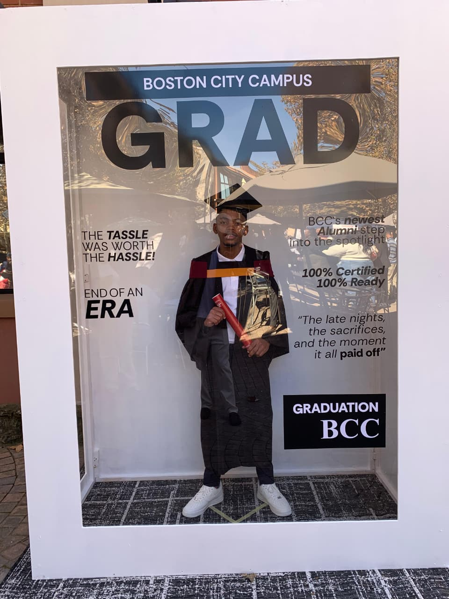
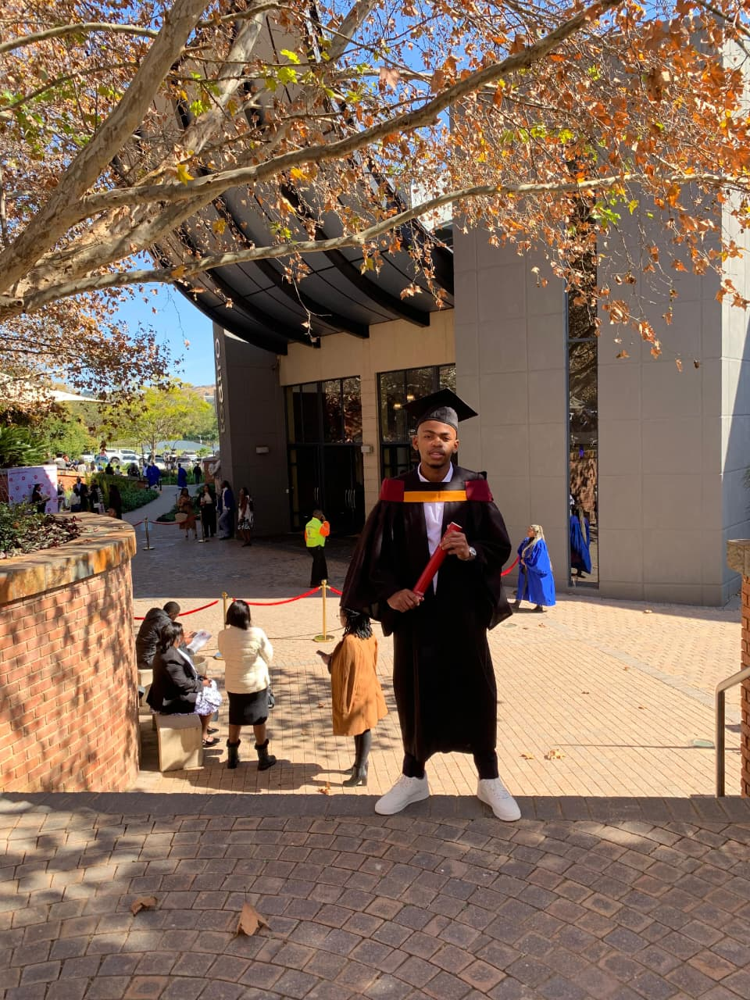

Hey, I'm Avuyile! 👋
From Small-Town Dreamer to Digital Innovator

Get to Know Me
Avuyile Mthembu is a 20-year-old software developer. He enjoys building practical software that works and is easy to use. He focuses on writing clean code and finishing projects thoroughly, from start to finish.
He has experience across the full development stack and pays attention to detail, making sure his work is reliable and maintainable. Avuyile likes learning new tools and improving how software is built.
His goal is simple: create useful software that solves real problems and is done right.
My Quirky Journey
Tracing the roots of my educational and personal growth.
🌱 Village Roots
Raised in Sandanezwe, a rural area between Ixopo and Donnybrook/Bulwer, I spent my early years in a close-knit community where resourcefulness and curiosity were part of everyday life. Until 2017, this environment shaped my mindset, teaching me how to solve problems creatively and adapt with limited resources.
📚 Primary Education
Khethokuhle Primary School: Built foundational academic skills and early problem-solving abilities, establishing a strong base for continued learning while growing up in a rural schooling environment.
🎓 Secondary Education
Thornhill Christian College (Pietermaritzburg): Transitioned from a rural upbringing to a more urban academic environment, fostering discipline, independence, and critical thinking. I pursued a science and technology stream, focusing on Physical Sciences, Mathematics, Life Sciences, Agricultural Sciences, and Computer Applications Technology.
💻 Tertiary Education
Boston City Campus (Durban): Diploma in Systems Development, specialising in software development with exposure to building practical applications. This phase strengthened my technical proficiency and reinforced my passion for creating real-world software solutions.
Graduation Day Highlights
Boston City Campus Graduation Ceremony — Tuesday, 26 May 2026

Faculty
Celebration
Regalia PortraitThe Faces & Fun Facts
Avuyile's World inside and outside of the IDE.
🎭 The Jokester
Known for my witty comebacks and ability to make people laugh, even with my inherently introverted nature.
🧠 The Brainiac
Possessing a curious mind that is always ready to tackle complex problems and push the boundaries of modern technology.
👔 The Style Icon
I believe in impeccable hygiene and maintaining a sharp sense of style that naturally turns heads wherever I go.
🤔 Thoughtful Influencer
I choose my words carefully, making each statement count and leaving a lasting, positive impression on those I speak with.
🧼 Precision in Presentation
I believe in maintaining a clean, polished appearance, bringing a sense of order, structure, and readiness to everything I do.
🚀 Tech Enthusiast
I dream in code and wake up with actionable solutions. My pillow is probably stuffed entirely with binary code!
🌍 Global Thinker
Deeply passionate about utilizing blockchain infrastructure and Artificial Intelligence to make the world a genuinely better place.
💡 Innovation-Driven
I design and build practical digital solutions that solve real problems — from productivity tools and educational platforms to scalable web applications, all channelled through Vylex Technologies.
📚 Lifelong Learner
Whether studying complex systems development or delving deep into philosophy, I am entirely committed to growing and mastering every skill I take on.
🔐 Core Tech Interests
Passionate about technical problem-solving and software development, actively building across cybersecurity (ethical hacking and penetration testing), artificial intelligence, blockchain technologies, cryptocurrencies, and decentralized, permissionless peer-to-peer systems within open-source ecosystems.